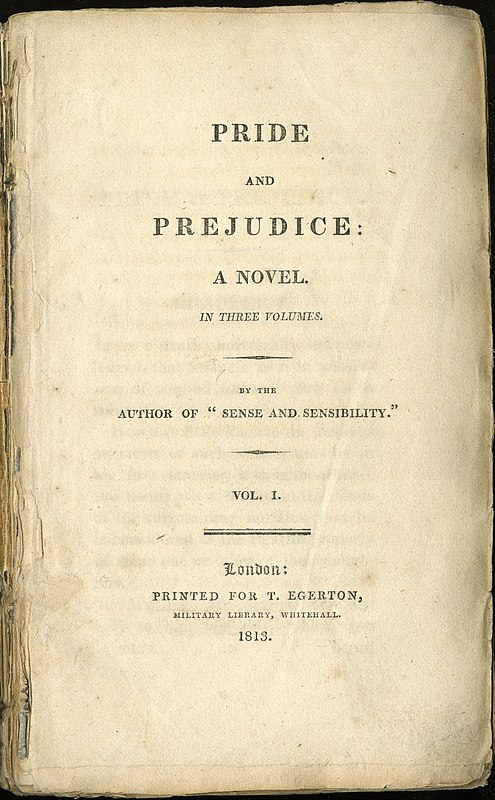
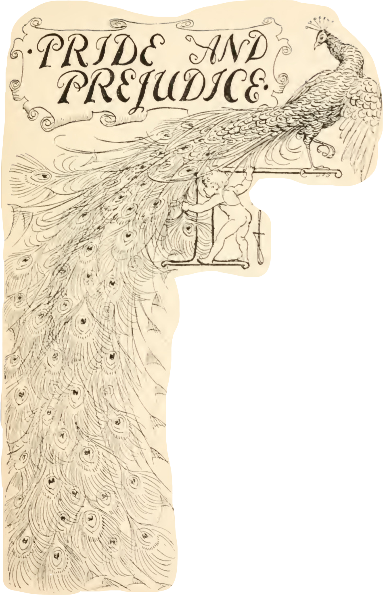
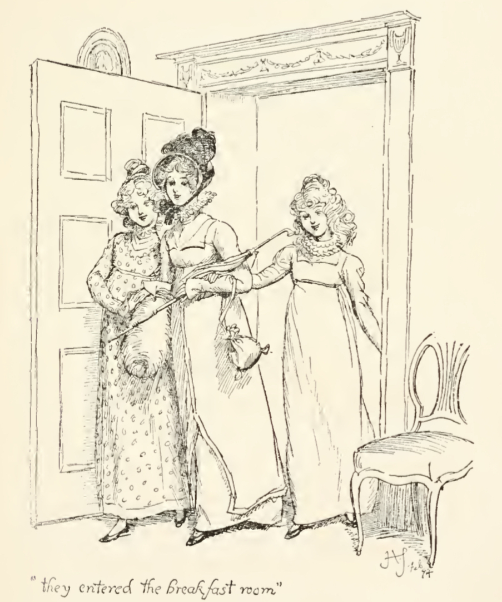
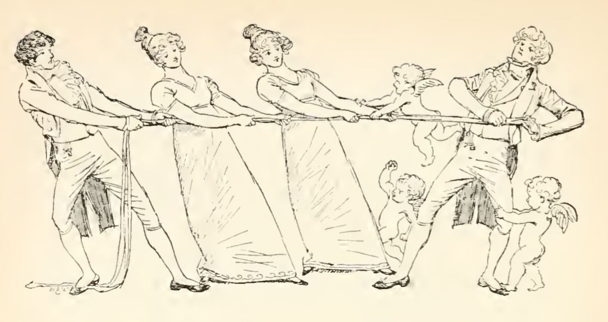
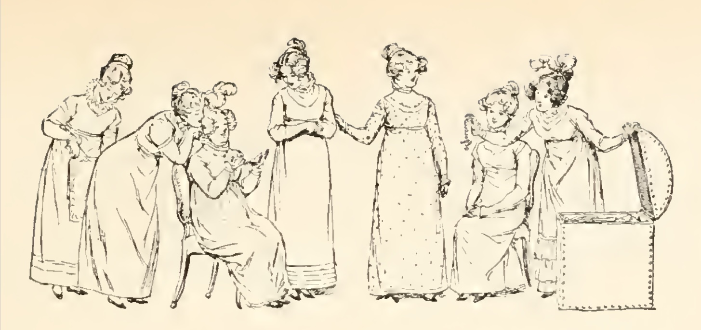

Основная идея нашего сайта заключается в том, чтобы рассказать подробнее о ключевых женских персонажах романа Джейн Остин «Гордость и предубеждение» — о пятерых сестрах Беннет и Шарлоте Лукас. Нам было интересно не только собрать информацию о героинях в одном месте, но и проанализировать образ каждый с точки зрения нарративной структуры: как девушки описываются нарраторкой / другими персонажами и, наконец, как они сами говорят о себе. Мы также посчитали необходимым добавить страницу с биографической справкой о Джейн Остин, непосредственно о романе и рецепции произведений писательницы. Дополнением к нашему сайту служит микро-исследование сети персонажей в романе, включающее в себя описание взаимодействий анализируемых героинь между собой и с другими персонажами.
Сайт обладает единой навигацией, она расположена сверху, при нажатии на имя каждой из героинь в том же окне откроется вкладка с ее страницей, содержащая информацию о ней и библиографию. Кроме того, был добавлен раздел «сеть персонажей».

Цитирование осуществляется по: Остин Дж. Гордость и предубеждение / Подг. изд. Н. М. Демурова, И. С. Маршак, Б. Б. Томашевский; отв. ред. М. П. Алексеев; пер. с англ. И. С. Маршака // Литературные памятники. М.: Издательство «Наука», 1967.
Иллюстрации: Hugh Thomson
О романе:

«Роман этот слишком легковесен, слишком блестит и сверкает» — Джейн Остин о своем романе [7: 299—300].
«Гордость и предубеждение» («Pride and Prejudice»)— один из самых известных романов Джейн Остин. Над ним она начала работать в 1796—1797 годах в то время, как писала «Разум и чувство» (в период между двух версий).
Первый вариант названия романа — «Первые впечатления», причиной смены заглавия был выход одноименного романа М. Холфорд. Первоначальное название появляется в письме к издателю Кэддлу 1 ноября 1797 с просьбой опубликовать рукопись за счет автора, она была отклонена. Далее фигурировало только «Гордость и предубеждение», которое было заимствовано из «Цецилии» Ф. Берни: «Вся эта грустная история — результат Гордости и Предубеждения».
Опубликован роман был впервые Т. Эджертоном в 1813 году, сообщение об этом появилось в «Morning Chronicle» 28 января 1813 года (цена экземпляра — 18 шиллингов). В том же году в ноябре было выпущено второе издание. Возможно, Эджертон не оповестил писательницу о подготовке переиздания (авторские права на роман принадлежали ему), так как Остин отмечала, что ошибка, допущенная в первой версии, не была исправлена.
1796 октябрь
Начаты «Первые впечатления» (закончены в августе 1797 года).
1797 ноябрь
Начаты «Разум и чувство». «Первые впечатления» предложены издателю Кэддлу и отклонены им.
1812 ноябрь
Т. Эджертон покупает «Гордость и пред убеждение» («Первые впечатления»).
1813 январь
В издательстве Т. Эджертона выходит «Гордость и предубеждение» («Сочинение автора «Разума и чувства»»).
1813 январь
Вторым изданием выходят «Разум и чувство» и «Гордость и предубеждение».
1816 март
Выходит очередной номер «Куотерли ревью» со статьей Вальтера Скотта об «Эмме». Выходит второе издание «Мэнс филд Парка». Летом закончено «Убеж дение» (первый вариант). В Париже вы ходят первые переводы «Мэнсфилд Парка», «Гордости и предубеждения» и «Эммы» на французский язык.
Поэтика романа:
Этот роман относят к раннему периоду творчества Джейн Остин, в нем много остроумия. Н. М. Демурова [2: 577] отмечает, что писательница использует приемы «understatement», когда сказано меньше, чем нужно, или, напротив, больше — «overstatement». Одним из средств создания комического также выступает прием «bathos», означающий неожиданное снижение тона в речи. Все это работает на создание комического фона для повествования, добавляет легкую иронию и оживляет роман.
В своем романе Остин избегает громоздких художественных конструкций, большого количество выразительных средств, что отличает ее от современников, так как ее внимание сконцентрировано на внутренней жизни персонажей. Мы практически не встретим описания внешности, нарядов, достаточно мало изображений пейзажей, любое их появление — функционально, так как служит еще одним средством для отображения, например, характера героя.
Писательница весьма точна в изображении мира вокруг, она не описывает то, с чем не знакома сама, достоверность для нее важна: она пользовалась календарем и справочником для работы. Однако она не ставила перед собой задачи полной передачи действительности, для нее было важно, чтобы упоминаемое действие, рисуемый пейзаж были естественными в романе.

Структура романа:
«Гордость и предубеждение» по своей структуре напоминает строение античных трагедий: можно сказать, что все начинается с «заблуждения», после благодаря случаю герой прозревает и потом проходит долгий путь переосмысления. Роман Остин — это роман поиска себя, путем избавления от предрассудков. Эта схема одинакова для обоих главных героев: и для Элизабет, и для Дарси, повторяется один композиционный ход: гордость —заблуждение — предубеждение — осознание ошибки — торжество подлинных принципов и чувств [2: 557]. Кульминацией тогда становится письмо Дарси, так как оно вызывает череду размышлений, а помогающим случаем — бегство Лидии.
Элизабет в романе — пример девушки, обладающей высокими моральными качествами, образованностью, умом и чистосердечием, но общество не признает достойной, так как не обладает ни богатством, ни сословным преимуществом. Стоит отметить, что для Остин были важны идеи Просвещения, ее героиня руководствуется не только сердцем, но и разумом, который помогает ей в принятии решений. Элизабет выше среде, в которой находится, что уязвляет ее гордость. Гордость для Дарси — сословная, кроме того, для него важна образованность его собеседника. Изначально он относится к Элизабет предубежденно, но потом избавляется от ложных принципов.
Сложность персонажей
У Остин практически нет героев, которые были бы двухмерными, обычно это проявляется только в комических персонажах (мама героинь, мистер Коллинз), они, можно сказать, отчасти построены по методу гуморов Б. Джонсона. Остальные персонажи обладают смешанными, сложными характерами. Интересно, что на эту тему рассуждает и сама главная героиня:
«Я и не подозревал,— продолжал Бингли,— что вы занимаетесь изучением человеческой природы. Это, должно быть, весьма интересный предмет.
— Да, особенно интересны сложные характеры. У них, по крайней мере, это преимущество» [3: 59].
Новаторство писательницы заключается в том, что она одна из первых начинает использовать несобственно прямую речь, которая позволяет проникнуть в сознание героя, при этом не интерферируясь полностью в его мысли, соблюдая дистанцию, происходит соединение сознания нарраторки и персонажа. Кроме того, в романе Остин нет дидактичности, в передаче мыслей героев чувствуется отношение к ним, однако нет прямых слов, позволяющих описать точную позицию абстрактного автора. В. Вульф говорит о писательнице, что «she is impersonal, inscrutable» [9: 17].

Рецепция и отзывы современников:
Положительные:
В. Скотт: «Снова, вот уже по крайней мере в третий раз, перечитал превосходно написанный роман мисс Остин «Гордость и предубеждение». Эта молодая дама обладает талантом воспроизво ить события, чувства и характеры обыденной жизни, талантом самым замечательным из всех, которые мне приходилось встречать!» [8: 135].
Р. Шеридан: «Ничего не читал умнее и остроумнее этого романа!» [6: 20].
Дж. Г. Льюис пишет: «Признаемся, что величие Дженн Остин, ее удивительное драматическое чувство сродни этому высочайшему свойству Шекспира» [Ibid: 27—28].
Отрицательные:
Уордсворт: «Правда жизни, не озаренная всепроницающим светом воображеия» [Ibid].
Ш. Бронте: «И что же я там нашла? Точное, как на дагерротипе, изображение банального лица, тщательно отгороженный, хорошо ухоженный сад с ровными бордюрами и нежными цветами; ни одной яркой, дышащей физиономии, ни открытых просторов, ни синих гор, ни серебристых ручьев» [6: 70].
В целом, в течение своей жизни Остин была достаточно известна среди своих современников и признана ими, потом ее популярность угасла на несколько десятилетий и возродилась перед Первой мировой войной. С тех пор произведения писательницы получают все большее и большее распространения, а с появлением кинофильмов, основанных на ее книгах, ее известность стремительно растет, особенно это заметно в последние годы.
История экранизаций
Почему романы Остин часто выбираются для экранизации? Вероятно, это связно с тем, что они тяготеют к драматическим произведениям, предназначенным для постановок: они обладают стройной композицией, а главное — выразительными диалогами, которые можно передать на экране.
Гордость и предубеждение» 1940. Режиссер: Роберт З. Леонард, в главных ролях: Грир Гарсон, Лоренс Оливье. Интересно, что эта экранизация выходит практически сразу после выпуска фильма по роману Маргарет Митчелл «Унесенные ветром» с Вивьен Ли и Кларком Гейблом в главных ролях, режиссер даже планировал пригласить сниматься ту же пару актеров. Эти экранизации похожи: их обложки напоминают друг друга и даже костюмы схожие (что не соответствует историческим реалиям) и можно сказать, что отчасти «Гордость и предубеждение» пытается повторить успех «Унесенных ветром». Получается, что почти одновременно на телеэкраны выходит сразу две экранизации романов, написанных женщинами, имеющих некоторые сюжетные параллели, и к тому же сближенные засчет того, как режиссер фильма по «Гордости и предубеждению» выстраивает визуальный ряд.
«Гордость и предубеждение», 1995. Режиссер: Саймон Лэнгтон, в главных ролях: Колин Фёрт, Дженнифер Эль.
«Гордость и предубеждение», 2005, фильм. Режиссер: Джо Райт, в главных ролях: Кира Найтли, Мэттью Макфэдьен
За последние несколько лет появилось еще несколько экранизаций, говорящих о том, что интерес к роману не угасает: телесериал 2014 года, «Дневники Лиззи Беннет» 2012 года, «Гордость и предубеждение и зомби» 2015 года, «Мистер Гордость и Мисс Предубеждение» 2017 года.
В России
Рецепция:
В России Джейн Остин долгое время не была известна, несмотря на то, что ее современники-англичане были популярны среди русских читателей. Вероятно, это связано с тем, что первое время отсутствовал не только перевод на русский язык, но и на французский, на котором разговаривала и читала аристократия. Прошло практически сто лет между первой заметкой о писательнице в «Вестнике Европы» за 1816 год и упоминанием ее в «Истории западной европейской литературы нового времени» Ф. П. Шиллера. Начиная с середины XX века, произведения Остин начинают активно переводить и издавать.
Переводы:
Романы писательницы упоминаются, начиная с XIX века, однако они не переводятся, только в XX веке появляется возможность прочесть их по-русски. Хронология переводов «Гордости и предубеждения»:
Серия «Литературные памятники», 1967 год, в переводе И. Маршака. Он вышел тиражом в 20 000 экземпляр, и на сегодняшний день остается самым часто публикуемым (131 книга из 199, находящихся в РГБ (https://search.rsl.ru/ru/search#p=20&q=author:(Джейн Остин) AND title:(гордость и предубеждение)) вышла именно в этом переводе). Поэтому в нашей работе цитируется именно он.
Библиография первого издания: Остин Дж. Гордость и предубеждение / Подг. изд. Н. М. Демурова, И. С. Маршак, Б. Б. Томашевский; отв. ред. М. П. Алексеев; пер. с англ. И. С. Маршака // Литературные памятники. М.: Издательство «Наука», 1967.
Примеры публикаций недавнего времени: Остин Дж. Гордость и предубеждение / Пер. с англ. И. Маршака. Спб: Азбука-классика, 2006.
Остин Дж. Гордость и предубеждение / Пер. с англ. И. Маршака. М.: АСТ, 2018.
Остин Дж. Гордость и предубеждение / Пер. с англ. И. Маршака. М.: Эксмо, 2021.
Перевод первой строки: «Все знают, что молодой человек, располагающий средствами, должен подыскивать себе жену» [Цит. по 1].
Перевод И. Гуровой, 1998 год.
Примеры публикаций недавнего времени: Остин Дж. Гордость и предубеждение / Пер. с англ. И. Гуровой. М.: Вече, 2016.
Остин Дж. Гордость и предубеждение / Пер. с англ. И. Г. Гуровой. М. : Гелеос, 2008.
Перевод первой строки: «Холостяк, если он обладает солидным состоянием, должен настоятельно нуждаться в жене, такова общепризнанная истина»
Перевод А. Грызуновой, 2007 год.
Перевод первой строки: «Холостяку, располагающему прилитым состоянием, надлежит иметь нужду в обзаведеньи женой — все на свете признают сие за истину» [Цит. по 1].
Перевод А. Ливерганта, 2021 год (готовится к выпуску)
Перевод первой строки: «В целом мире не сыскать безумца, который решился бы оспорить тот факт, что богатый холостяк непременно должен находиться в постоянном поиске спутника жизни».

Библиография:
Аннотации к переводам: «Гордость и предубеждение» Джейн Остин // Горький медиа [Электронный ресурс] URL: https://gorky.media/context/annotatsii-k-perevodam-gordost-i-predubezhdenie-dzhejn-osten/
Демурова Н. М. Джейн Остин и ее роман «Гордость и предубеждение // Литературные памятники. М.: Издательство «Наука», 1967. С. 538—590.
Остин Дж. Гордость и предубеждение / Подг. изд. Н. М. Демурова, И. С. Маршак, Б. Б. Томашевский; отв. ред. М. П. Алексеев; пер. с англ. И. С. Маршака // Литературные памятники. М.: Издательство «Наука», 1967.
Примечания // Литературные памятники. М.: Издательство «Наука», 1967. С. 590—620.
Хронограф жизни и творчества Джейн Остин / Сост. Н. М. Демурова // Литературные памятники. М.: Издательство «Наука», 1967. С. 620—623.
Jane Austen. Critical Bibliography / by R. W. Chapman. Oxford, 1953.
Jane Austen’s Letters to her sister Cassandra and others» / Сollected and edited by R. W. Chapman. London: Oxford University Press, 1952.
Sir Walter Scott’s Journal / edited by J. G. Tait. S. 1, 1939.
Virginia Woolf. Jane Austen // Jane Austen. A Collection of Critical Essays / edited by Jan Watt. London, 1961.